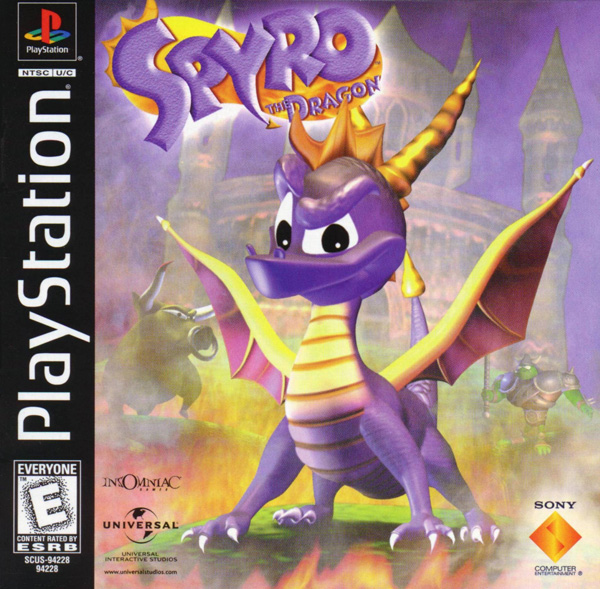
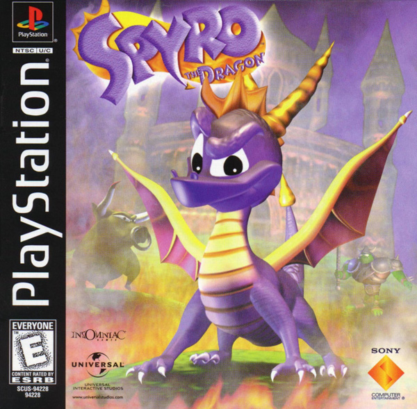

-This game was made by Naughty Dog in 1996.
-It was one of the first 3d platformers that stars Crash
-The main objective is to collect gems and defeat the evil Dr. Neo Cortex
-This game was made by Insomniac Games, and Activision in 1998.
-This was a game franchise that would later become very successful
-The main objective is to collect gems, free dragons, and defeat the Gnasty Gnork
-This game was made by Capcom in 1993.
-It was the first in the series Mega Man X
-The main objective is to navigate through complex stages,
gain new powers from defeated bosses and to defeat the evil Sigma
-This game was made by Nintendo in 1991.
-This is a classic game that most people appreciate stars the hero Link
-The main objective is to collect quest items and defeat the evil
Ganondorf with the legendary Master Sword
 
